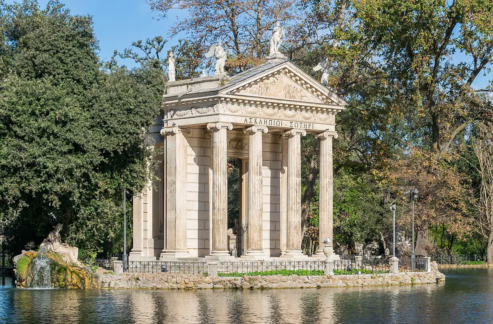

OS PONTOS DE INTERESSE ROMANOS

Castel Sant'Angelo
Villa Borghese

Arco de Constantino
Palatino
Piazza Navona
Restaurantes Imperdíveis em Roma
- La Pergola
- Roscioli
- Armando al Pantheon
- Da Enzo al 29
- Il Pagliaccio
TOP 5 MONUMENTOS
-

Coliseu
-

Fórum Romano
-
Panteão
-
Basílica de São Pedro
-

Capela Sistina
LOCAIS A NÃO PERDER
-

Trastevere
-
Mercado de Campo de' Fiori
-

Villa Borghese
-
Piazza Navona
-

Palatino
-
Galleria Doria Pamphili
-
Bairro Judeu
-
Terme di Caracalla
-
Ponte Sisto
-
Janiculum Hill
MELHOR LOCAL PARA TIRAR FOTO
| Mês | Melhor Época para Visitar | Notas |
|---|---|---|
| Janeiro | Baixa Temporada | Frio, mas menos turistas. |
| Fevereiro | Baixa Temporada | Bom para ver Carnaval. |
| Março | Baixa Temporada | Clima ameno, menos turistas. |
| Abril | Alta Temporada | Temperaturas agradáveis e flores. |
| Maio | Alta Temporada | Ótimo clima para passeios. |
| Junho | Alta Temporada | Início do calor e muitos turistas. |
| Julho | Alta Temporada | Calor intenso, mais turistas. |
| Agosto | Baixa Temporada | Calor extremo, muitos locais fechados. |
| Setembro | Alta Temporada | Clima agradável e eventos culturais. |
| Outubro | Alta Temporada | Clima ameno, menos turistas. |
| Novembro | Baixa Temporada | Clima fresco, bom para museus. |
| Dezembro | Baixa Temporada | Decorações de Natal, menos turistas. |